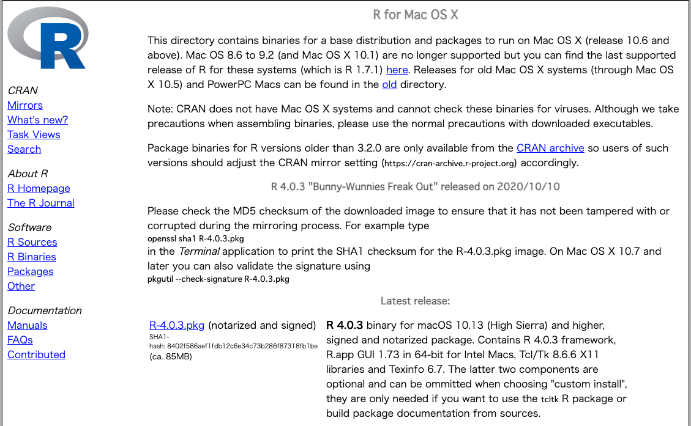

4 Rのインストール

4.2 ダウンロード
- Macの場合は
Download R for (Mac) OS Xをクリックし，一番上にあるR-4.0.3.pkg (notarized and signed)をクリックしR-4.0.3.pkgをダウンロードする． - Windowsの場合は
Download R for Windowsをクリックし，一番上のbaseをクリックし，次の画面のDownload R 4.0.3 for Windows (85 megabytes, 32/64 bit)をクリックしてR-4.0.3-win.exeをダウンロードする． - ダウンロードされたらファイルを実行してインストールする．
- 基本的には「OK」と「次へ」を選択する．ただしWindowsの場合，インストール先は日本語が含まれないようなフォルダやOnedrive等以外の場所に設定して下さい．

4.3 MAC

4.4 Windows

4.5 Rの起動
- Rがインストールされたら次のような画面（コンソール）がでてくる．
- 赤字は無視して下さい．

4.6 Rのテスト
- Rコンソール上に，直接入力してテストしましょう．
>の後に1+2と入力して，Return（Enter）を押してください．
1 + 2## [1] 3- ここまでできればRのテストは完了です．
- 次にRStudioのダウンロードを行います．